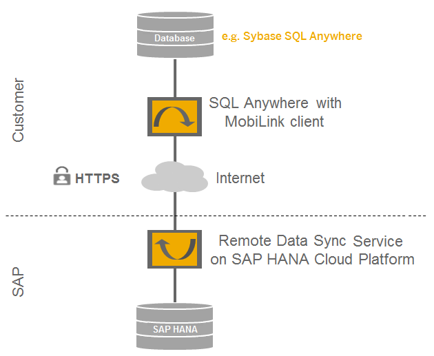
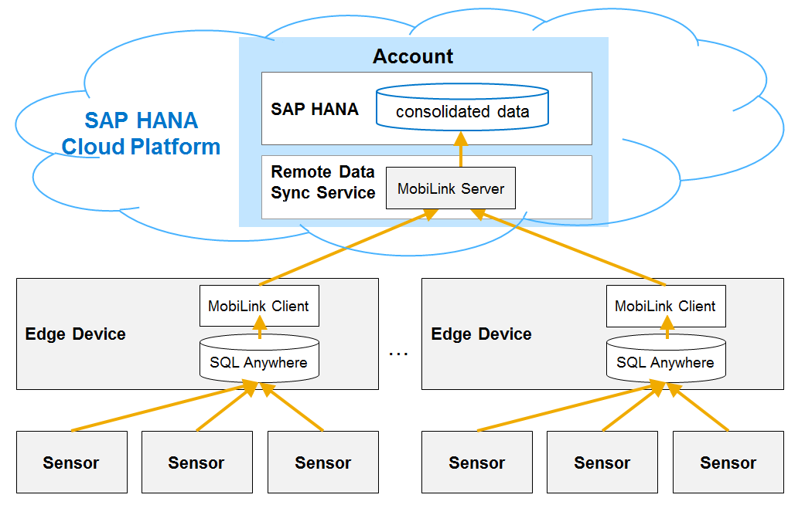

Remote Data Sync Service
- Using Remote Data Sync you can create occasionally-connected applications at the edge. These include applications that are not suitable or economical to have a permanent connection, or applications that must continue to operate in the face of unexpected network failures.
- Also, you can create applications that use a local database and synchronize with the cloud when a connection is available.
- Remote Data Sync allows you to create remote applications that store and share large amounts of data between the application and the cloud. This can significantly reduce latency for data-rich applications and provide a more responsive user experience for remote applications.
A single cloud database may have hundreds of thousands of data collection and action endpoints that operate in the real world over sometimes unreliable networks. Remote Data Sync provides a way to connect all of these remote applications and to synchronize all databases at the edge into a single cloud database.

The figure below illustrates a typical IoT scenario using the Remote Data Sync service: Sensors or smart meters create data that is sent and stored decentrally in small embedded databases, such as SQL Anywhere or SQL Anywhere UltraLite. To get a consolidated view on the data of all remote locations, this data is synchronized in the following:
- SAP HANA database on the cloud via SQL Anywhere MobiLink clients, running on the edge devices;
- SQL Anywhere MobiLink servers, which are provided in the cloud by the Remote Data Sync service.
New insights can be later gained by analytics and data mining on the consolidated data in the cloud.

- Get your licenses.
- Provision a MobiLink server in your account which allows you to use the Remote Data Sync service.
- Develop a client-initiated synchronization.
- Access the MobiLink logs during development.
- Protect your MobiLink server.
- Connect the SQL Anywhere tools to the MobiLink server.
- Configure an availability monitor for your MobiLink server.
Before you start working with the service, you might want to check its sizing requirements in order to choose the optimal hardware features for fluent run of your applications. For more information, see Performance and Scalability of the MobiLink Server.